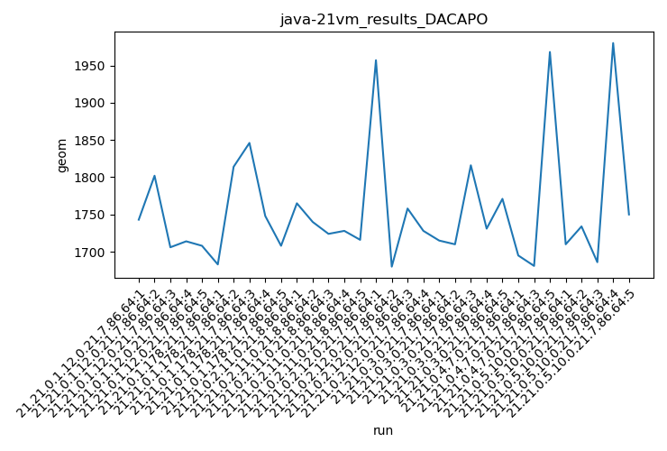

java-21 DACAPO
Context at bottom
/home/jvanek/git/benchmarks-in-nested-virtualisation-toolchain/final_results/vm_results/vm_results_RADARGUNs1
java-21
DACAPO
/home/jvanek/git/benchmarks-in-nested-virtualisation-toolchain/final_results/vm_results/vm_results_RADARGUNs3
java-21
DACAPO
/home/jvanek/git/benchmarks-in-nested-virtualisation-toolchain/final_results/vm_results/vm_results_DACAPO
java-21
DACAPO
vm_results_DACAPO
final score
Expected number of java-21 JDKs: 7
1st avgmed_alljdks_metric:
/home/jvanek/git/benchmarks-in-nested-virtualisation-toolchain/final_results/result_processing.py /home/jvanek/git/benchmarks-in-nested-virtualisation-toolchain/final_results/vm_results/vm_results_DACAPO geom False
values: [1743, 1802, 1706, 1714, 1708, 1683, 1814, 1846, 1748, 1708, 1765, 1740, 1724, 1728, 1716, 1957, 1680, 1758, 1728, 1715, 1710, 1816, 1731, 1771, 1695, 1681, 1968, 1710, 1734, 1686, 1980, 1750]

Expected number of iterations: 5
final number of values: 32 out of 35
Pass rate: 91.4%
values: (1680, 1980, 1756.71875, 1731)

** accuracy from all jdks and runs
more is better
MIN: 1680
MAX: 1980
AVG: 1756.71875
MED: 1731
Relative differences 1:
MIN-MAX: 15.0 %
MIN-AVG: 4.0 %
MIN-MED: 3.0 %
MAX-MIN: -18.0 %
MAX-AVG: -13.0 %
MAX-MED: -14.0 %
AVG-MED: -1.0 %
stored to java-21.properties. sort | uniq that!
2nd avgmed_by_jdk_metric:
values: [1734.6, 1759.8, 1734.6, 1780.75, 1748.6, 1781.3333333333333, 1772.0]

values: [1714, 1748, 1728, 1758, 1731, 1695, 1734]

values: (1734.6, 1781.3333333333333, 1758.8119047619045, 1759.8)
values: (1695, 1758, 1729.7142857142858, 1731)

** accuracy from all jdks where runs were avged
more is better
MIN: 1734.6
MAX: 1781.3333333333333
AVG: 1758.8119047619045
MED: 1759.8
Relative differences 1:
MIN-MAX: 3.0 %
MIN-AVG: 1.0 %
MIN-MED: 1.0 %
MAX-MIN: -3.0 %
MAX-AVG: -1.0 %
MAX-MED: -1.0 %
AVG-MED: 0.0 %
stored to java-21.properties. sort | uniq that!
** accuracy from all jdks where runs were medianed
more is better
MIN: 1695
MAX: 1758
AVG: 1729.7142857142858
MED: 1731
Relative differences 1:
MIN-MAX: 4.0 %
MIN-AVG: 2.0 %
MIN-MED: 2.0 %
MAX-MIN: -4.0 %
MAX-AVG: -2.0 %
MAX-MED: -2.0 %
AVG-MED: 0.0 %
stored to java-21.properties. sort | uniq that!
/home/jvanek/git/benchmarks-in-nested-virtualisation-toolchain/final_results/vm_results/vm_results_J2DBENCH
java-21
DACAPO
/home/jvanek/git/benchmarks-in-nested-virtualisation-toolchain/final_results/vm_results/vm_results_SPECJBB
java-21
DACAPO
/home/jvanek/git/benchmarks-in-nested-virtualisation-toolchain/final_results/vm_results/vm_results_JMH
java-21
DACAPO
pass rates:
vm_results_DACAPO=91.4%
Context:
- vm_results
- DACAPO